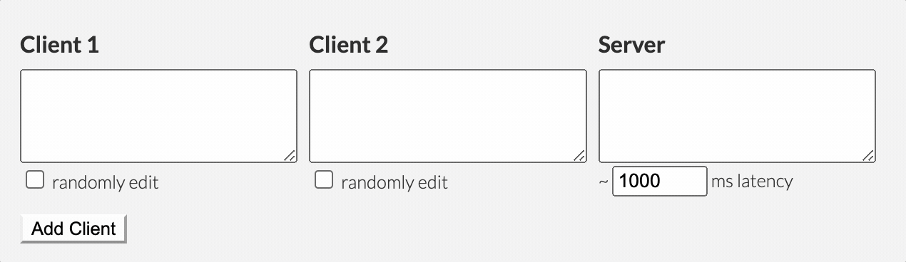
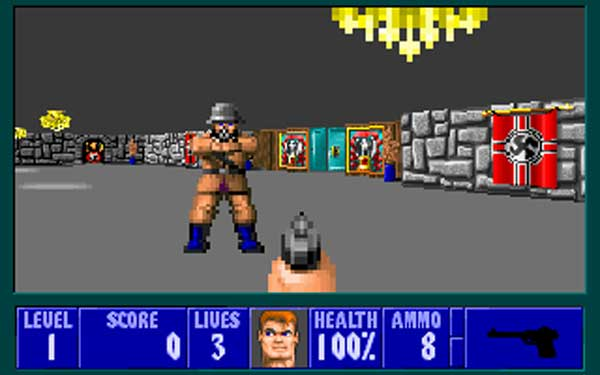
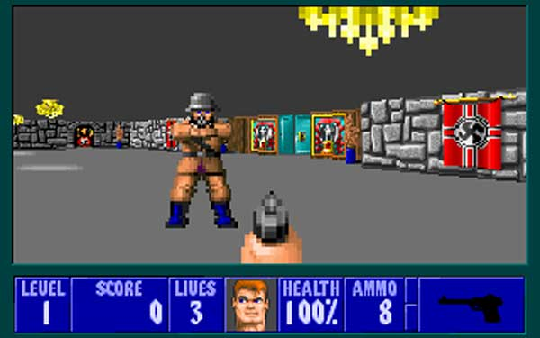

WASM Quake 3 Renderer
A Quake 3 renderer, built in C++ for the web (via emscripten/embind/wasm) and OSX.

I got to work on lots of cool stuff at Figma! See more on LinkedIn.
Since many of you have asked, we thought we should let the cat out of the bag… pic.twitter.com/3rHtyvtNKy
— Figma (@figma) September 23, 2019
A chess engine supporting magic bitboards for fast move generation, transposition tables for caching previously searched positions, and a iterative deepening search algorithm.
The engine runs in the browser via a web-worker. You can play it here!
github.com/cricklet/gopher-chess (go implementation)
github.com/cricklet/wasm-chess (rewrite in rust)
A Quake 3 renderer, built in C++ for the web (via emscripten/embind/wasm) and OSX.
An implementation/demo of collaborative text editing via operational transforms, based off of this article by Daniel Spiewak.
The ghosts of the dead haunt one dimension and the dead come back to life in the other! I built RIP in 48 hours for the 30th Ludum Dare competition. It's coded from scratch in Javascript using HTML5 <canvas/>. You can play it in your browser.

A custom built, Arduino powered curtain opening alarm clock.
Variance shadow mapping [Donnelly 2006], hemisphere based screen-space ambient occlusion, and real-time hatching [Praun 2001], implemented from scratch for a school project.

An AI that plays (and beats) the first level of Wolfenstein 3D, built as part of a group project in college. It analyzes the pixels on the screen and spoofs keyboard events to play the game.
A classic stealth game set in a pastel colored world inhabited by Death, built with Unity3D for the Insanity Jam competition.
PanesLibrary makes it easy to build native Android apps with flexible multi-pane tablet layouts. On the phone, the app appears as a conventional app with a sliding menu and a content pane where fragments are stacked on top of each other. On the tablet, the menu and all other fragments appear in dynamically added panes of varying sizes.
github.com/cricklet/Android-PanesLibraryAn Android game based on the original Mario Bros arcade game, built from scratch over the summer of 2011 with a couple friends.
Built for a school project. This computes radiosity via imperfect shadow maps inspired by Ritschel 2008. This method involves splatting a point representation of the scene to generate a shadow map. Multiple imperfect shadow maps can be generated in a single rendering pass.


(standard shadow maps, imperfect shadow maps)
A tower-defense RTS, built from scratch in 24 hours for the Facebook Princeton Hackathon. The AI relies mostly on gradient descent and a grid data structure.
Some simple Java games I built for fun in high school. My two favorite games were Gravity Golf (golfing with in a little n-body simulator) and Self-Defense-Initiative (a missle defense clone).


A Half Life 2 mod I made in high school which converts classic Wolfenstein 3D maps to the Source engine.
 

A Half Life mod I made freshman year of high school. It's Half Life, except every character is Yoda and all the weapons are from Star Wars.